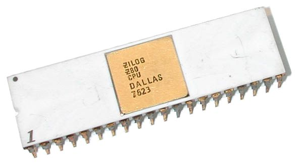

Razvoj Procesorja
- Intel 4004 (Prvi komercialni mikroprocesor, 4 - bitni. Bil je zelo počasen, praktično neuporaben. Služil je le kot kalkulator.)
- Intel 8008 (Prvi 8 - bitni procesor, služil je le v terminalih, deloval pa je bolj kot ne samo kot kalkulator. Vseeno je bil še zelo počasen.)
- Zilog Z80 (Procesor, ki je malo modernejši kot Intel 8008. Znan je le po tem, da je bil to prvi proceosr, katerega ideja je bila, da bi služil v domačih računalnik. Bil pa je tudi združljiv z Intel 8008.)
- Intel 8086 (Prvi procesor, ki se je pojavil v domačih računalnikih. Deloval je na arhitekturi x86.)
- Intel 80386 (Prvi večopravilen procesor, 16 - bitni. Značilnosti tega procesorja so, da je lahko uporabnik izvajal več ukazov naenkrat. Vseeno, pa v primerjavi z današnjimi procesorji -)
 |
|
|  |
Procesorji so se razvijali skozi desetletja. Prvi mikroprocesorji so bili enostavni, z majhno zmogljivostjo. Sčasoma so postali hitrejši, zmogljivejši in bolj učinkoviti. Danes so procesorji ključni del vsakega računalnika, saj omogočajo izvajanje kompleksnih nalog.
Delovanje Procesorja
|
Procesor deluje tako, da izvaja zaporedje ukazov, ki jih prejme iz računalniškega pomnilnika. Vsak ukaz se obdela v več korakih: pridobivanje ukaza, dekodiranje, izvajanje in shranjevanje rezultatov. Procesorji uporabljajo ure za sinhronizacijo teh korakov, kar omogoča hitro in učinkovito obdelavo podatkov. Nahaja se na matični plošči. |
- ALU (Aritmetično-logična enota)
- Krmilna enota
- Registri
- Predpomnilnik
- Vhodno-izhodne enote
ALU izvaja aritmetične in logične operacije, kot so seštevanje, odštevanje, množenje, deljenje ter logične operacije AND, OR, NOT in XOR. Je ključna komponenta za izvajanje računskih operacij v procesorju.
Krmilna enota usmerja delovanje procesorja. Dekodira ukaze iz pomnilnika, določa, katere operacije bodo izvedene, in usmerja tok podatkov med različnimi komponentami procesorja.
Registri so majhne, hitre pomnilniške enote znotraj procesorja, ki shranjujejo podatke in ukaze, ki jih procesor trenutno obdeluje. Omogočajo hitro dostopanje do podatkov, kar povečuje učinkovitost procesorja.
Predpomnilnik je vrsta hitrega, majhnega pomnilnika, ki se nahaja znotraj ali blizu procesorja. Njegova glavna naloga je začasno shranjevanje pogosto dostopnih podatkov in ukazov, da se izboljša hitrost dostopa do teh podatkov v primerjavi s počasnejšim glavnim pomnilnikom (RAM).
Vhodne in izhodne enote (I/O enote) v procesorju služijo za komunikacijo procesorja z zunanjimi napravami in perifernimi napravami. Njihova naloga je prenašanje podatkov med procesorjem in različnimi vhodnimi (npr. tipkovnica, miška) ter izhodnimi napravami (npr. monitor, tiskalnik).
Zgradba Procesorja
Procesor je sestavljen iz več ključnih komponent, vključno z aritmetično-logično enoto (ALU), krmilno enoto in registri. Te komponente delujejo skupaj, da omogočajo izvajanje ukazov in obdelavo podatkov:
- ALU (Aritmetično-logična enota)
- Krmilna enota
- Registri
- Predpomnilnik
- Vhodno-izhodne enote
Tipi Procesorjev Danes
- CPU, GPU, mobilni procesorji, procesorji za vgrajene sisteme, procesorji za strežnike, procesorji za umetno inteligenco
- Med nakupovanjem procesorja ali računalnika, velikrat naletimo na enoto Ghz. To je enota, ki nam pove, koliko ciklov lahko naredi v eni sekundi, torej koliko ukazov lahko izvede v eni sekundi. Večja kot je vrednost pri tej enoti, boljši je proceosr, vendar pa ni to edini faktor, ki vpliva na hitrost procesorja.
Danes obstaja več različnih vrst procesorjev, prilagojenih za specifične naloge:
- CPU (Central Processing Unit): Osnovni procesor, ki je odgovoren za izvajanje večine nalog v računalniku. Upravljajo logične in aritmetične operacije, izvajajo programe in upravljajo sistemske vire.
- GPU (Graphics Processing Unit): Posebej zasnovani za obdelavo grafike in paralelnih izračunov. So ključni pri igrah, vizualizaciji in strojni inteligenci.
- Mobilni procesorji: Namenjeni uporabi v mobilnih napravah, kot so pametni telefoni in tablični računalniki. Optimizirani so za nizko porabo energije in visoko zmogljivost.
- Procesorji za vgrajene sisteme: Uporabljeni v napravah z določeno funkcijo, kot so avtomobili, gospodinjski aparati in industrijske naprave. So prilagojeni za posebne aplikacije in okolja.
- Procesorji za strežnike: Namenjeni za obdelavo velikih količin podatkov in izvajanje večopravilnosti. Uporabljajo se v podatkovnih centrih in strežniških sistemih.
- Procesorji za umetno inteligenco: Posebej zasnovani za izvajanje nalog, povezanih z umetno inteligenco in strojim učenjem. Ponuja visoko zmogljivost za paralelno obdelavo podatkov.
Viri vsebine
- Prenosnik: procesor, kaj pomenijo njegove oznake. Dostopno prek: https://www.prenosnik.info/procesor-kaj-pomenijo-njegove-oznake/
- Univerza v Ljubljani: Procesor. Dostopno prek: http://sasa.musiclab.si/eri1/RACUNALNISTVO_OLD/ZGRADBA_RACUNALNIKA/procesor.html
- CPU proti GPU - pravilna izbira. Dostopno prek: https://introserv.com/sl/blog/cpu-vs-gpu/
- Uvod v računalništvo. Dostopno prek: https://quizlet.com/839239656/uvod-v-racunalnistvo-urac-flash-cards/
- Zgradba in delovanje centralne procesne enote. Dostopno prek: http://sasa.musiclab.si/eri1/RACUNALNISTVO/arhitekturaRS/centralnaProcesnaEnota.html
- Centralni procesor. Dostopno prek: https://sl.wikipedia.org/wiki/Centralni_procesor
Viri slik
- Flickr. Avtor: Kenneth Martin. Dostopno prek: https://www.flickr.com/photos/9479603@N02/4200968953/
- Wikimedia Commons. Avtor: Thomas Nguyen Dostopno prek: https://commons.wikimedia.org/wiki/File:Intel_C4004_b.jpg/
- Wikimedia Commons. Avtor: Gennadiy Shvets Dostopno prek: https://commons.wikimedia.org/wiki/File:Zilog_Z80.jpg/
- Wikimedia Commons. Avtor: UN RodolfoNeres. Dostopno prek: https://commons.wikimedia.org/wiki/File:L_intel-c8086.jpg/
- Wikimedia Commons. Avtor: Ilyka Plekhanov. Dostopno prek: https://commons.wikimedia.org/wiki/File:Ryzen_5_1600_CPU_on_a_motherboard.jpg/